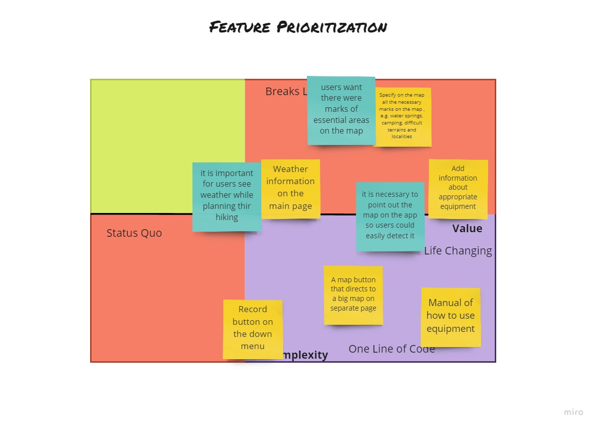
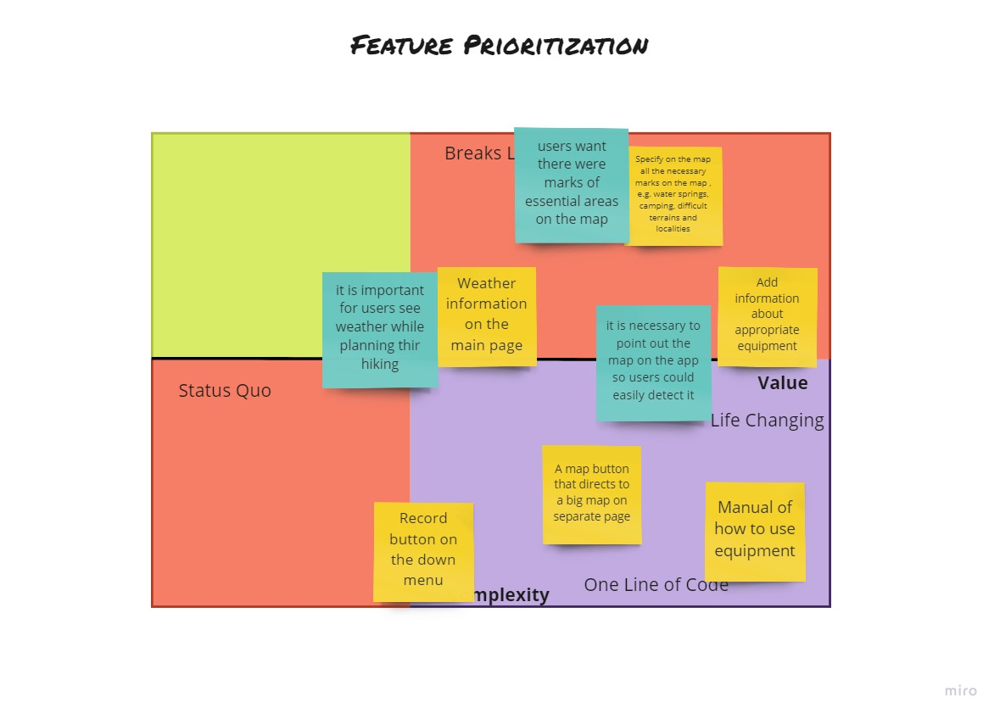

MyTrailKG Mobile App
Udacity Nanodegree Project
The project I created in terms of Udacity Online Course. Students were suggested to choose any topic and create end-to-end design project usind different deliverables and design tools.
- Role: Research, Wireframes, Prototyping, Testing, Sketching
- Year: Spring, 2020
- Tools: Figma, Miro, Zeplin


 
